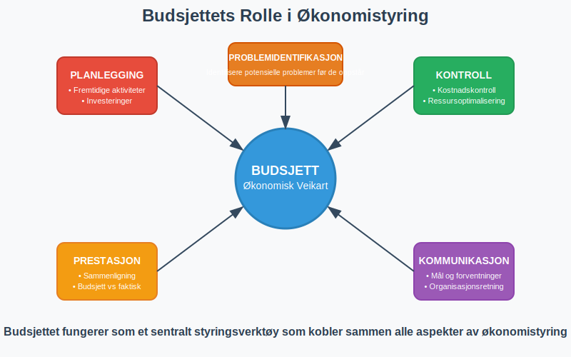
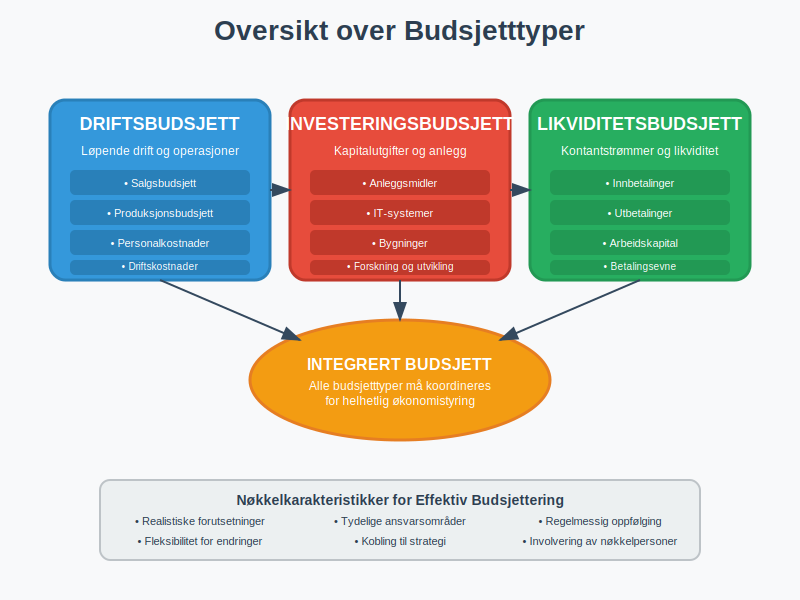
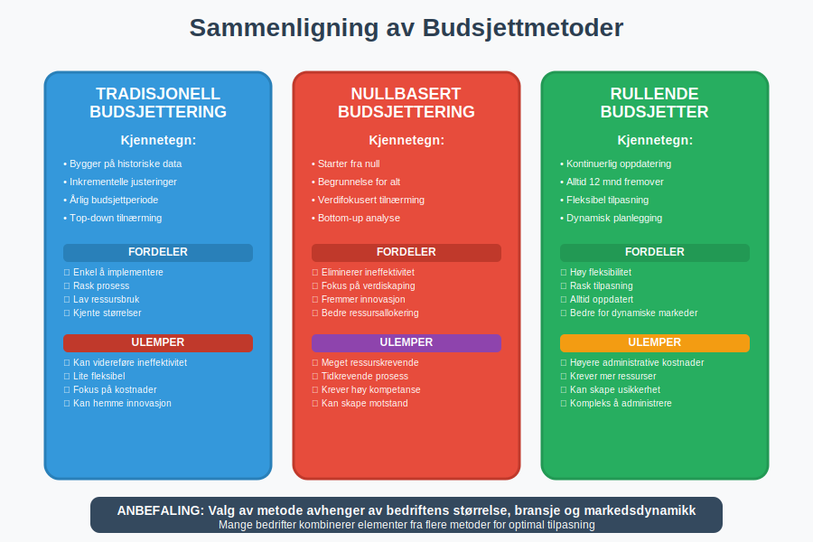
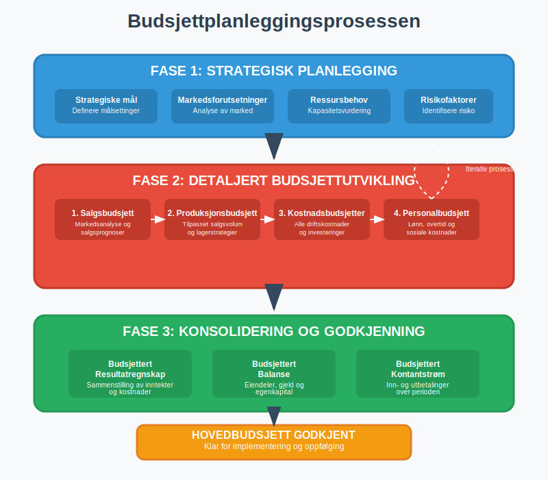
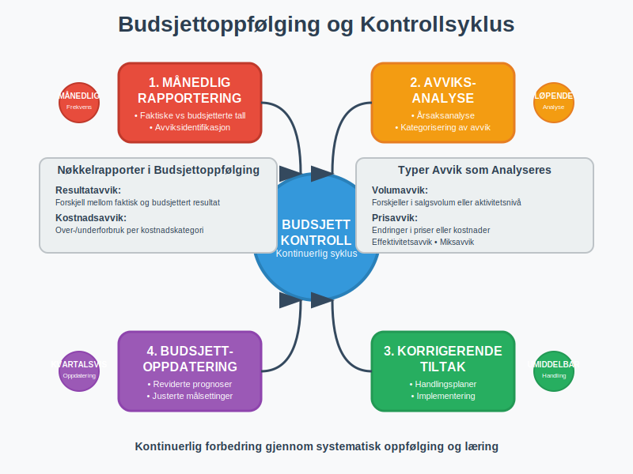
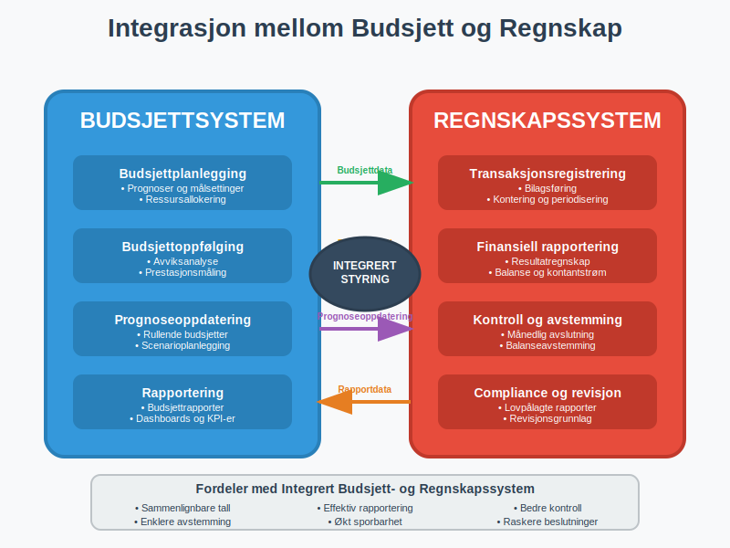
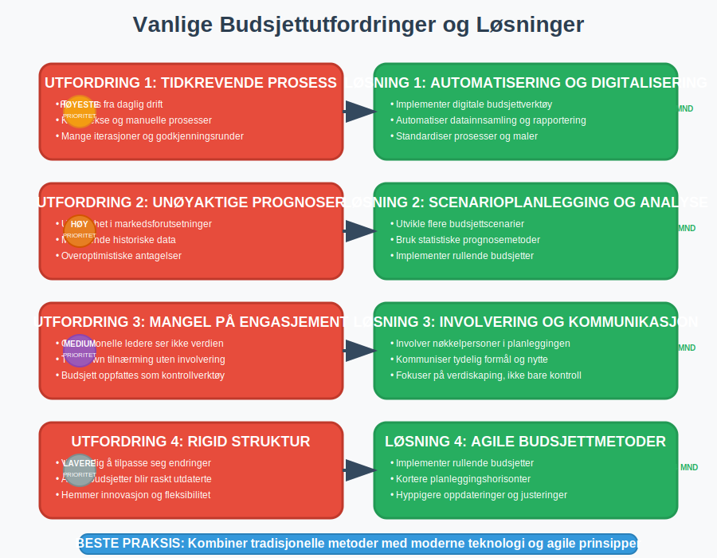

Budsjettering er en systematisk planleggingsprosess hvor bedrifter estimerer fremtidige inntekter, kostnader og kontantstrømmer for bestemte terminer. Dette er et fundamentalt verktøy for økonomistyring som hjelper ledelsen med å sette mål, allokere ressurser og kontrollere den økonomiske utviklingen. Budsjettering er tett knyttet til regnskapet og er en sentral komponent i internregnskap, hvor det fungerer som et styringsverktøy for å oppnå bedriftens strategiske mål over ulike regnskapsperioder.
I budsjetteringsprosessen er det også essensielt å ta hensyn til alternativkostnad, som representerer hva bedriften gir avkall på ved å velge én ressursbruk fremfor en annen. Les mer om dette i vår artikkel om alternativkostnad.
I tillegg bør bedriften beregne sitt kapitalbehov for å sikre tilstrekkelig finansiering. Se vår guide om Kapitalbehov.
Hva er et budsjett?
Les mer om grunnleggende konseptet i Budsjett.
Et budsjett er en detaljert finansiell plan som viser forventede inntekter og utgifter for en fremtidig periode, vanligvis ett år. Det fungerer som en økonomisk veikart som hjelper bedriften med å:
- Planlegge fremtidige aktiviteter og investeringer
- Kontrollere kostnader og optimalisere ressursbruk
- Måle prestasjon gjennom sammenligning av faktiske tall mot budsjett
- Identifisere potensielle problemer før de oppstår
- Kommunisere mål og forventninger til organisasjonen

Budsjettering er nært knyttet til avvikshåndtering, hvor forskjeller mellom budsjetterte og faktiske tall analyseres og følges opp systematisk.
Budsjetttyper og deres anvendelse
Det finnes flere typer budsjetter som tjener ulike formål i bedriftens økonomistyring. Valg av budsjetttype avhenger av bedriftens størrelse, bransje og strategiske behov.

Driftsbudsjett
Driftsbudsjettet er kjernen i budsjettplanleggingen og dekker den løpende driften av bedriften. Det inkluderer:
- Salgsbudsjett: Forventede inntekter fra salg av varer og tjenester
- Produksjonsbudsjett: Kostnader knyttet til produksjon og vareinnkjøp
- Personalkostnader: Lønn, arbeidsgiveravgift, feriepenger og andre personalkostnader
- Driftskostnader: Husleie, forsikring, markedsføring og andre løpende utgifter
Driftsbudsjettet er tett knyttet til driftsregnskapet, som viser de faktiske operative resultatene og brukes til å sammenligne budsjetterte tall med faktiske utfall for å analysere avvik og justere fremtidige budsjetter.
Investeringsbudsjett
Investeringsbudsjettet planlegger større kapitalutgifter som:
- Kjøp av anleggsmidler som maskiner og utstyr
- IT-systemer og programvare
- Bygninger og lokaler
- Forskning og utvikling
Investeringer påvirker både balansen og fremtidige avskrivninger. Ved evaluering av investeringsprosjekter brukes ofte diskontering for å beregne nåverdien av fremtidige kontantstrømmer og vurdere lønnsomheten.
Likviditetsbudsjett
Likviditetsbudsjettet fokuserer på kontantstrømmer og sikrer at bedriften har tilstrekkelig arbeidskapital til å møte sine forpliktelser. Dette budsjettet er kritisk for å opprettholde god betalingsevne.
For en dyptgående forståelse av likviditetsplanlegging, inkludert praktiske eksempler og beste praksis, se vår omfattende guide til likviditetsbudsjett.
Budsjettmetoder og tilnærminger
Valg av budsjettmetode påvirker både prosessen og resultatet av budsjettarbeidet. Ulike metoder egner seg for forskjellige typer virksomheter og situasjoner.

Tradisjonell budsjettering
Den tradisjonelle tilnærmingen bygger på historiske tall og justerer disse basert på forventede endringer:
| Fordeler | Ulemper |
|---|---|
| Enkel å implementere | Kan videreføre ineffektivitet |
| Basert på kjente størrelser | Lite fleksibel |
| Rask prosess | Fokuserer på kostnader, ikke verdi |
| Lav ressursbruk | Kan hemme innovasjon |
Nullbasert budsjettering
Nullbasert budsjettering starter fra null og krever begrunnelse for hver budsjettpost:
- Alle aktiviteter må begrunnes på nytt
- Fokus på verdiskaping og effektivitet
- Mer ressurskrevende prosess
- Egnet for organisasjoner som trenger omstilling
Rullende budsjetter
Rullende budsjetter oppdateres kontinuerlig ved å legge til nye perioder når gamle perioder avsluttes:
- Alltid 12 måneder fremover i tid
- Mer fleksibel tilpasning til endringer
- Krever mer administrative ressurser
- Bedre for dynamiske markeder
Budsjettplanlegging og implementering
En vellykket budsjettplanlegging krever systematisk tilnærming og involvering av relevante interessenter i organisasjonen.

Fase 1: Strategisk planlegging
Budsjettarbeidet starter med å definere:
- Strategiske mål for budsjettperioden
- Markedsforutsetninger og konkurransesituasjon
- Ressursbehov og kapasitetsbegrensninger
- Risikofaktorer som kan påvirke resultatene, inkludert konjunktursvingninger
En grundig forretningsplan danner det strategiske grunnlaget for budsjettarbeidet og sikrer at budsjettene er i tråd med virksomhetens langsiktige mål og strategier.
Fase 2: Detaljert budsjettutvikling
I denne fasen utarbeides detaljerte budsjetter for hver avdeling:
- Salgsbudsjett basert på markedsanalyse og salgsprognoser
- Produksjonsbudsjett tilpasset salgsvolum og lagerstrategier
- Kostnadsbudsjetter for alle driftskostnader og investeringer
- Personalbudsjett inkludert lønn, overtid og sosiale kostnader
Et viktig element i budsjettutvikling er å beregne dekningspunkt for å forstå minimum salgsvolum som kreves for å dekke alle kostnader. Dekningsbidragsanalyse er også essensielt for å vurdere lønnsomheten av ulike produkter og tjenester i budsjettplanleggingen.
Fase 3: Konsolidering og godkjenning
Alle delbudsjetter samles til et hovedbudsjett som inkluderer:
- Budsjettert resultatregnskap
- Budsjettert balanse
- Budsjettert kontantstrømoppstilling
Budsjettoppfølging og kontroll
Etter at budsjettet er implementert, er kontinuerlig oppfølging essensielt for å sikre at målene nås og for å identifisere behov for korrigerende tiltak.

Månedlig budsjettrapportering
Månedlige budsjettrapporter sammenligner faktiske tall med budsjetterte tall:
| Rapportelement | Beskrivelse | Frekvens |
|---|---|---|
| Resultatavvik | Forskjell mellom faktisk og budsjettert resultat | Månedlig |
| Kostnadsavvik | Analyse av over-/underforbruk per kostnadskategori | Månedlig |
| Salgsavvik | Avvik i volum og pris sammenlignet med budsjett | Månedlig |
| Likviditetsavvik | Forskjeller i kontantstrøm og likviditetsbehov | Ukentlig |
Avviksanalyse og korrigerende tiltak
Når det oppstår betydelige avvik mellom budsjett og faktiske tall, må disse analyseres grundig. Differanseanalyse er et sentralt verktøy for å forstå årsaker til budsjettavvik:
- Volumavvik: Forskjeller i salgsvolum eller aktivitetsnivå
- Prisavvik: Endringer i salgspriser eller innkjøpskostnader
- Effektivitetsavvik: Forskjeller i produktivitet eller ressursbruk
- Miksavvik: Endringer i produktmiks eller kundesammensetning
Systematisk avvikshåndtering sikrer at læring fra avvik brukes til å forbedre fremtidige budsjetter og driftsprosesser.
Budsjettering og regnskapsintegrasjon
For at budsjettering skal være effektivt, må det integreres tett med bedriftens regnskapssystem og rapporteringsrutiner.

Kontoplanstruktur
Budsjettstrukturen bør følge samme kontoplan som regnskapet for å sikre:
- Sammenlignbare tall mellom budsjett og regnskap
- Effektiv rapportering og analyse
- Enklere avstemming av avvik
- Bedre sporbarhet og kontroll
Periodisering og timing
Budsjettet må ta hensyn til regnskapsmessige prinsipper som:
- Periodisering av inntekter og kostnader
- Avskrivninger av anleggsmidler
- Avsetninger for fremtidige forpliktelser
- Merverdiavgift og andre avgifter
Digitale verktøy for budsjettering
Moderne bedrifter benytter digitale løsninger for å effektivisere budsjettarbeidet og forbedre nøyaktigheten i prognosene.
Regnskapssystemer med budsjettfunksjonalitet
Mange regnskapssystemer tilbyr integrerte budsjettmoduler som:
- Automatisk import av historiske data
- Fleksible budsjettmaler og strukturer
- Sanntids sammenligning av budsjett og faktiske tall
- Automatiserte rapporter og dashboards
Spesialiserte budsjettverktøy
For større organisasjoner kan dedikerte budsjettverktøy være nødvendig:
- Avanserte prognosefunksjoner med statistiske modeller
- Scenarioplanlegging for å teste ulike forutsetninger, inkludert dekningspunkt-analyse for ulike salgsvolum
- Workflow-styring for godkjenningsprosesser
- Konsolidering av budsjetter fra flere enheter
Utfordringer og beste praksis
Budsjettering kan være utfordrende, men ved å følge etablerte beste praksis kan bedrifter maksimere verdien av budsjettarbeidet.

Vanlige utfordringer
- Tidkrevende prosess som tar fokus fra daglig drift
- Unøyaktige prognoser på grunn av usikkerhet
- Mangel på engasjement fra operasjonelle ledere
- Rigid struktur som ikke tilpasser seg endringer
Beste praksis for vellykket budsjettering
- Involver nøkkelpersoner i budsjettplanleggingen
- Bruk realistiske forutsetninger basert på markedsanalyse
- Implementer fleksible budsjetter som kan justeres underveis
- Fokuser på verdiskaping, ikke bare kostnadskontroll
- Etabler klare roller og ansvar i budsjettorganisasjonen
Måling av budsjetteffektivitet
For å vurdere kvaliteten på budsjettarbeidet, bør bedrifter måle:
| Nøkkeltall | Beskrivelse | Målsetting |
|---|---|---|
| Budsjettavvik | Gjennomsnittlig avvik mellom budsjett og faktisk | < 5% |
| Prognosenøyaktighet | Hvor treffsikre prognosene er over tid | > 90% |
| Budsjettaktualitet | Hvor ofte budsjetter oppdateres | Kvartalsvis |
| Prosesseffektivitet | Tid brukt på budsjettarbeid | < 2% av arbeidstid |
Budsjettering i ulike bransjer
Budsjettmetoder og fokusområder varierer betydelig mellom bransjer, avhengig av forretningsmodell og markedsdynamikk.
Produksjonsbedrifter
Produksjonsbedrifter fokuserer på:
- Kapasitetsplanlegging og produksjonsvolum
- Råvarekostnader og leverandørstyring
- Lager- og logistikkostnader
- Kvalitetskostnader og svinn
Tjenestebedrifter
Tjenestebedrifter prioriterer:
- Personalkostnader som ofte utgjør størstedelen av kostnadene
- Kapasitetsutnyttelse og fakturerbare timer
- Kundetilfredshet og gjenkjøp
- Teknologi- og systemkostnader
Handelsbedrifter
Handelsbedrifter konsentrerer seg om:
- Innkjøpspriser og leverandørforhandlinger
- Lageromsetning og kapitalbinding
- Markedsføring og kundeakkvisisjon
- Lokalkostnader og logistikk
Fremtiden for budsjettering
Budsjettering utvikler seg kontinuerlig med nye teknologier og endrede forretningsbehov.
Kunstig intelligens og maskinlæring
AI-drevne budsjettverktøy kan:
- Analysere store datamengder for bedre prognoser
- Identifisere mønstre og trender automatisk
- Tilpasse budsjetter basert på sanntidsdata
- Redusere manuelt arbeid og feilkilder
Agile budsjettering
Agile budsjettmetoder fokuserer på:
- Kortere planleggingshorisonter
- Hyppigere oppdateringer og justeringer
- Økt fleksibilitet og tilpasningsevne
- Tettere kobling til strategisk planlegging
Integrert rapportering
Fremtidens budsjettering vil være tettere integrert med:
- Bærekraftsrapportering og ESG-målinger
- Risikostyring og scenarioplanlegging
- Strategisk planlegging og målstyring
- Operasjonell rapportering og KPI-er
Budsjettering forblir et kritisk verktøy for økonomistyring, men metodene og teknologiene vil fortsette å utvikle seg for å møte fremtidens forretningsbehov. Ved å kombinere tradisjonell finansiell planlegging med moderne teknologi og agile metoder, kan bedrifter skape mer verdifulle og handlingsorienterte budsjetter.